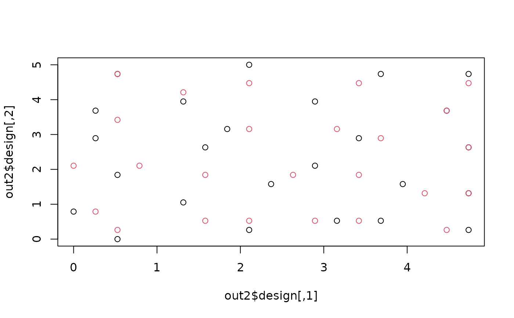
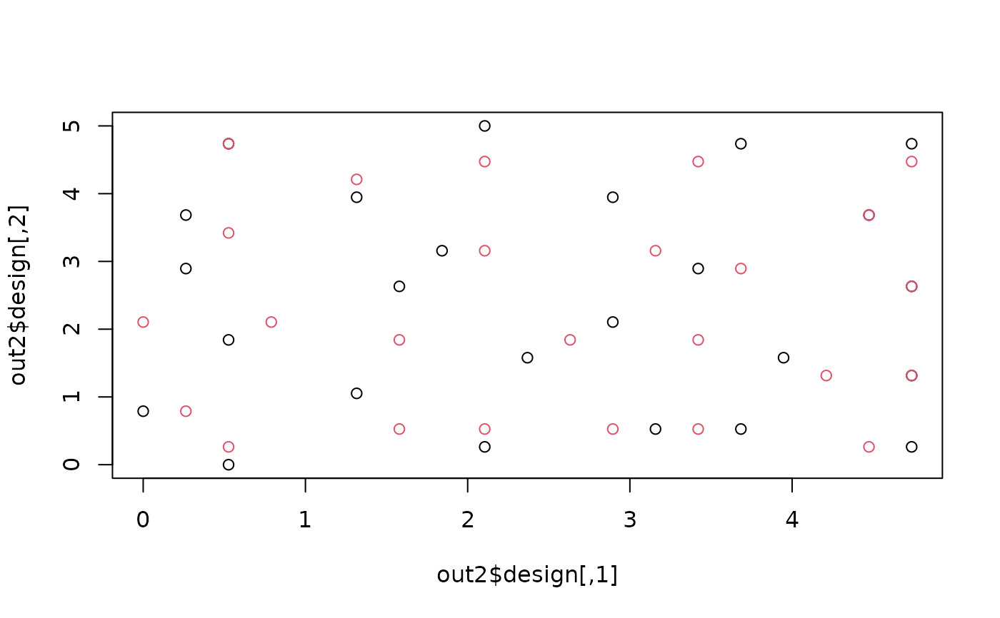

Computes Space-Filling "Coverage" designs using Swapping Algorithm
cover.design.RdFinds the set of points on a discrete grid (Candidate Set) which minimize a geometric space-filling criterion. The strength of this method is that the candidate set can satisfy whatever constraints are important for the problem.
cover.design(R, nd, nruns = 1, nn = TRUE, num.nn = 100, fixed = NULL,
scale.type = "unscaled", R.center, R.scale, P = -20, Q = 20,
start = NULL, DIST = NULL, return.grid = TRUE, return.transform =
TRUE, max.loop=20, verbose=FALSE)Arguments
- R
A matrix of candidate points to be considered in the design. Each row is a separate point.
- nd
Number of points to add to the design. If points exist and are to remain in the design (see "fixed" option), nd is the number of points to add. If no points are fixed, nd is the design size.
- nruns
The number of random starts to be optimized. Uses random starts unless "start" is specified. If nruns is great than 1, the final results are the minimum.
- nn
Logical value specifying whether or not to consider only nearest neighbors in the swapping algorithm. When nn=FALSE, then the swapping algorithm will consider all points in the candidate space. When nn=TRUE, then the swapping algorithm will consider only the num.nn closest points for possible swapping. The default is to use nearest neighbors only (nn=TRUE).
- num.nn
Number of nearest-neighbors to search over. The default number is 100. If nn=F then this argument will be ignore.
- fixed
A matrix or vector specifying points to be forced into the experimental design. If fixed is a matrix, it gives coordinates of the fixed points in the design. In this case fixed must be a subset of R. If fixed is a vector, then fixed gives the row numbers from the candidate matrix R that identify the fixed points. The number of points to be generated, nd, is in addition to the number of points specified by fixed.
- scale.type
A character string that tells how to scale the candidate matrix, R, before calculating distances. The default is "unscaled", no transformation is done. Another option is "range" in which case variables are scaled to a [0,1] range before applying any distance functions. Use "unscaled" when all of the columns of R are commensurate; for example, when R gives x and y in spatial coordinates. When the columns of R are not in the same units, then it is generally thought that an appropriate choice of scaling will provide a better design. This would be the case, for example, for a typical process optimization. Other choices for scale.type are "unit.sd", which scales all columns of R to have 0 mean and unit standard deviation, and "user", which allows a user specified scaling (see R.center and R.scale arguments).
- R.center
A vector giving the centering values if scale.type=
user.- R.scale
A vector giving the scale values if scale.type=
user.- P
The "p" exponent of the coverage criterion (see below). It affects how the distance from a point x to a set of design points D is calculated. P=1 gives average distance. P=-1 gives harmonic mean distance. P=-Inf would give minimum distance (not available as a value). As P gets large and negative, points will tend to be more spread out.
- Q
The "q" exponent of the coverage criterion (see below).It affects how distances from all points not in the design to points in the design are averaged. When Q=1, simple averaging of the distances is employed. Q=Inf (not available as a value) in combination with P=-Inf would give a classical minimax design.
- start
A matrix or vector giving the initial design from which to start optimization. If start is a matrix, it gives the coordinates of the design points. In this case start must be a subset of the candidate set , R matrix. If start is a vector, then start gives the row numbers of the initial design based on the rows of the candidate matrix rows. The default is to use a random starting design.
- DIST
This argument is only for cover.design.S. A distance metric in the form of an S function. Default is Euclidean distance (FIELDS rdist function) See details and example below for the correct form.
- return.grid
Logical value that tells whether or not to return the candidate matrix as an attribute of the computed design. The default is return.grid=T. If false this just reduces the returned object size. The candidate matrix is used by plot.spatial.design if it is available.
- return.transform
Logical value that tells whether or not to return the transformation attributes of candidate set. The default is return.transform=T.
- max.loop
Maximum number of outer loops in algorithm. This is the maximum number of passes through the design testing for swaps.
- verbose
If TRUE prints out debugging information.
Value
Returns a design object of class spatialDesign.
Subscripting this object has the same effect as subscripting the first
component (the design). The returned list has the following
components:
- design
The best design in the form of a matrix.
- best.id
Row numbers of the final design from the original candidate matrix, R.
- fixed
Row numbers of the fixed points from the original candidate matrix, R.
- opt.crit
Value of the optimality criterion for the final design.
- start.design
Row numbers of the starting design from the original candidate matrix, R.
- start.crit
Value of the optimality criterion for the starting design.
- history
The swapping history and corresponding values of the optimality criterion for the best design.
- other.designs
The designs other than the best design generated when nruns is greater than 1.
- other.crit
The optimality criteria for the other designs when nrun is greate than 1.
- DIST
The distance function used in calculating the design criterion.
- nn
Logical value for nearest-neighbor search or not.
- num.nn
The number of nearest neighbor set.
- grid
The matrix R is returned if the argument return.grid=T.
- transform
The type of transformation used in scaling the data and the values of the centering and scaling constants if the argument return.transform=T.
- call
The calling sequence.
- P
The parameter value for calculating criterion.
- Q
The parameter value for calculating criterion.
- nhist
The number of swaps performed.
- nloop
The number of outer loops required to reach convergence if nloop is less the max.loop.
- minimax.crit
The minimax design criterion using DIST.
- max.loop
The maximum number of outer loops.
Details
OTHER DISTANCE FUNCTIONS: You can supply an R/S-function to be used as the distance metric. The expected calling sequence for this distance function is function( X1,X2){....} where X1 and X2 are matrices with coordinates as the rows. The returned value of this function should be the pairwise distance matrix. If nrow( X1)=m and nrow( X2)=n then the function should return an m by n matrix of all distances between these two sets of points. See the example for Manhattan distance below.
The candidate set and DIST function can be flexible and the last example below using sample correlation matrices is an example.
COVERAGE CRITERION: For nd design points in the set D and nc candidate points ci in the set C, the coverage criteria is defined as:
M(D,C) = [sum(ci in C) [sum(di in D) (dist(di,ci)**P]**(Q/P)]**(1/Q)
Where P, less than 0, and Q, greater than 0, are parameters. The algorithm used in "cover.design" to find the set of nd points in C that minimize this criterion is an iterative swapping algorithm which will be described briefly. The resulting design is referred to as a "coverage design" from among the class of space-filling designs. If fixed points are specified they are simply fixed in the design set and are not allowed to be swapped out.
ALGORITHM: An initial set of nd points is chosen randomly if no starting configuration is provided. The nc x nd distance matrix between the points in C and the points in D is computed, and raised to the power P. The "row sums" of this matrix are computed. Denote these as rs.i and the vector of row sums as rs. Using rs, M(D,C) is computed as:
[sum i (rs.i)**(Q/P)]**(1/Q)
Note that if point d.i is "swapped" for point c.j, one must only recompute 1 column of the original distance matrix, and 1 row. The row elements not in the ith column will be the same for all j and so only need computing when the first swapping occurs for each d.i . Denote the sum of these off-i elements as "newrow(i)". The index is i here since this is the same for all rows (j=1,...nc). Thus, for each swap, the row sums vector is updated as
rs(new) = rs(old) - column(i,old) + column(i,new)
And the jth element of rs(new) is replaced by:
rs(new)[j] = column(i,new)[k] + newrow(i)
Finally, M(D,C) is computed for this swap of the ith design point for the jth candidate point using [2]. The point in C that when swapped produces the minimum value of M(D,C) replaces d.i. This is done for all nd points in the design, and is iterated until M(D,C) does not change. When the nearest neighbor option is selected, then the points considered for swapping are limited to the num.nn nearest neighbors of the current design point.
STABILITY
The algorithm described above is guaranteed to converge. However, upon convergence, the solution is sensitive to the initial configuration of points. Thus, it is recommended that multiple optimizations be done (i.e. set nruns greater than 1 ). Also, the quality of the solution depends on the density of the points on the region. At the same time, for large regions , optimization can be computationally prohibitive unless the nearest neighbor option is employed.
References
Johnson, M.E., Moore, L.M., and Ylvisaker, D. (1990). Minimax and maximin distance designs. Journal of Statistical Planning and Inference 26, 131-148. SAS/QC Software. Volume 2: Usage and Reference. Version 6. First Edition (1995). "Proc Optex". SAS Institute Inc. SAS Campus Drive,
See also
rdist, rdist.earth
Examples
##
##
# first generate candidate set
set.seed(123) # setting seed so that you get the same thing I do!
test.df <- matrix( runif( 600), ncol=3)
test1.des<-cover.design(R=test.df,nd=10)
summary( test1.des)
#> Call:
#> cover.design(R = test.df, nd = 10)
#>
#> Number of design points: 10
#> Number of fixed points: 0
#> Optimality Criterion: 0.406
#>
#> History:
#> step swap.out swap.in new.crit
#> 0 0 0 0.7055
#> 1 188 75 0.6510
#> 2 190 161 0.5859
#> 3 137 194 0.5356
#> 4 139 67 0.5137
#> 5 43 146 0.5116
#> 6 115 42 0.5109
#> 7 158 123 0.5007
#> 8 189 84 0.4975
#> 9 55 38 0.4731
#> 10 193 138 0.4675
#> 11 75 120 0.4510
#> 12 161 29 0.4288
#> 13 194 97 0.4217
#> 14 146 45 0.4151
#> 15 42 36 0.4145
#> 16 123 187 0.4078
#> 17 38 46 0.4060
plot( test1.des)
#
candidates<- make.surface.grid( list( seq( 0,5,,20), seq(0,5,,20)))
out<- cover.design( candidates, 15)
# find 10 more points keeping this original design fixed
out3<-cover.design( candidates, 10,fixed=out$best.id)
# see what happened
plot( candidates[,1:2], pch=".")
points( out$design, pch="x")
points( out3$design, pch="o")
 # here is a strange graph illustrating the swapping history for the
# the first design. Arrows show the swap done
# at each pass through the design.
h<- out$history
cd<- candidates
plot( cd[,1:2], pch=".")
points( out$design, pch="O", col=2)
points( out$start.design, pch="x", col=5)
arrows(
cd[h[,2],1],
cd[h[,2],2],
cd[h[,3],1],
cd[h[,3],2],length=.1)
text( cd[h[,2],1],
cd[h[,2],2], h[,1], cex=1.0 )
# here is a strange graph illustrating the swapping history for the
# the first design. Arrows show the swap done
# at each pass through the design.
h<- out$history
cd<- candidates
plot( cd[,1:2], pch=".")
points( out$design, pch="O", col=2)
points( out$start.design, pch="x", col=5)
arrows(
cd[h[,2],1],
cd[h[,2],2],
cd[h[,3],1],
cd[h[,3],2],length=.1)
text( cd[h[,2],1],
cd[h[,2],2], h[,1], cex=1.0 )
 #
# try this out using "Manhattan distance"
# ( distance following a grid of city streets)
dist.man<- function(x1,x2) {
d<- ncol( x1)
temp<- abs(outer( x1[,1], x2[,1],'-'))
for ( k in 2:d){
temp<- temp+abs(outer( x1[,k], x2[,k],'-'))
}
temp }
# use the design from the Euclidean distance as the starting
#configuration.
cover.design( candidates, 15, DIST=dist.man, start= out3$best.id)-> out2
# this takes a while ...
plot( out2$design)
points( out3$design, col=2)

# find a design on the sphere
#
candidates<- make.surface.grid( list( x=seq( -180,180,,20), y= seq( -85,
85,,20)))
out4<-cover.design( candidates, 15, DIST=rdist.earth)
# this takes a while
plot( candidates, pch="+", cex=2)
points(out4$design, pch="o", cex=2, col="blue")
# covering based on correlation for 153 ozone stations
#
data( ozone2)
cor.mat<-cor( ozone2$y, use="pairwise")
cor.dist<- function( x1,x2)
{matrix( 1-cor.mat[ x1,x2], ncol=length(x2))}
#
# find 25 points out of the 153
# here the "locations" are just the index but the distance is
# determined by the correlation function.
#
out5<-cover.design(cbind(1:153),25, DIST= cor.dist, scale.type="unscaled")
plot( ozone2$lon.lat, pch=".")
points( ozone2$lon.lat[out5$best.id,],pch="O", col=4)
#
# this seems a bit strange probably due some funny correlation values
#
# reset panel
set.panel(1,1)
#> plot window will lay out plots in a 1 by 1 matrix
#
# try this out using "Manhattan distance"
# ( distance following a grid of city streets)
dist.man<- function(x1,x2) {
d<- ncol( x1)
temp<- abs(outer( x1[,1], x2[,1],'-'))
for ( k in 2:d){
temp<- temp+abs(outer( x1[,k], x2[,k],'-'))
}
temp }
# use the design from the Euclidean distance as the starting
#configuration.
cover.design( candidates, 15, DIST=dist.man, start= out3$best.id)-> out2
# this takes a while ...
plot( out2$design)
points( out3$design, col=2)

# find a design on the sphere
#
candidates<- make.surface.grid( list( x=seq( -180,180,,20), y= seq( -85,
85,,20)))
out4<-cover.design( candidates, 15, DIST=rdist.earth)
# this takes a while
plot( candidates, pch="+", cex=2)
points(out4$design, pch="o", cex=2, col="blue")
# covering based on correlation for 153 ozone stations
#
data( ozone2)
cor.mat<-cor( ozone2$y, use="pairwise")
cor.dist<- function( x1,x2)
{matrix( 1-cor.mat[ x1,x2], ncol=length(x2))}
#
# find 25 points out of the 153
# here the "locations" are just the index but the distance is
# determined by the correlation function.
#
out5<-cover.design(cbind(1:153),25, DIST= cor.dist, scale.type="unscaled")
plot( ozone2$lon.lat, pch=".")
points( ozone2$lon.lat[out5$best.id,],pch="O", col=4)
#
# this seems a bit strange probably due some funny correlation values
#
# reset panel
set.panel(1,1)
#> plot window will lay out plots in a 1 by 1 matrix